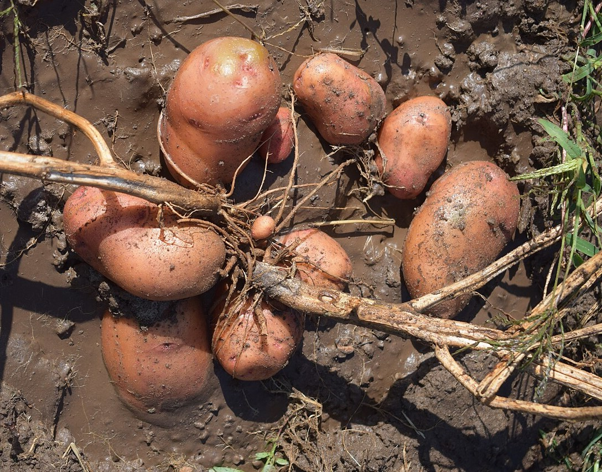
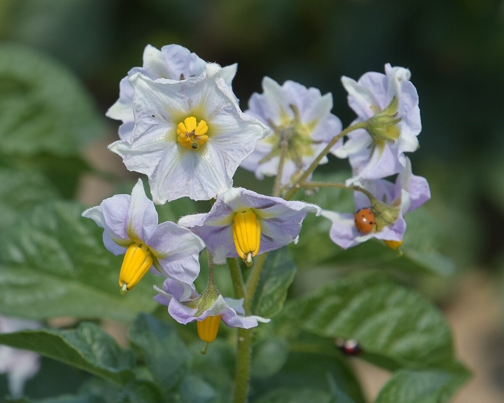

Woolém Way
Potato (Solanum tuberosum)
- Potatoes are an introduced food. This name literally means 'European potato', being derived from the name of a native tuber: way (harvest brodiaea).
- Woolém way is native to the Andes region of South America, where it was first cultivated 7,000-10,000 years ago. It is a member of the nightshade family, so it is closely related to tomatoes and eggplants.

Potatoes (photo by Сарапулов, CC BY 4.0)

❮
❯
Flowers of potato plant (photo by Luc.T, CC BY 2.0)
Homodíbe mɨɨm? (Where is it?) You can find woolém way growing in the Tribal Community Garden.
Esak’ahá daak’ábe mi c’aykɨ́ɨ? (Do you want to know more?) This webpage is part of a larger initiative to share signage highlighting plants found around the Shingle Springs Rancheria and their Nisenan names.
Webpage last updated: 2025-07-22